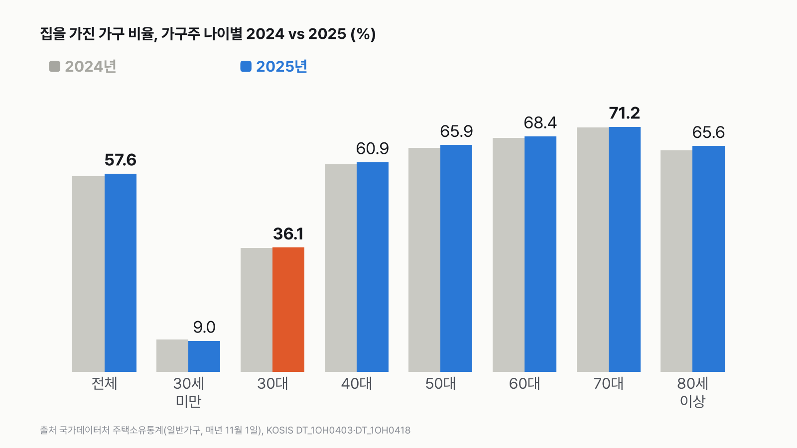

집 가진 가구, 30대는 10가구 중 몇일까
30대 가구의 집 가진 비율은 2024년보다 0.1%포인트만 움직였어요. '다시 오른다'고 말하기엔 너무 작은 변화예요. 전체(57.6%)보다는 20%포인트 넘게 낮아요.

3줄 요약
- 2025년 가구주가 30대인 가구 중 집을 가진 가구는 36.1%예요. 10가구 중 3.6가구예요.
- 2024년(36.0%)과 거의 같아요. 2018년부터 해마다 줄던 비율이 이번엔 줄지 않았어요.
- 전체 가구는 57.6%가 집을 가졌어요. 나이대 중 가장 높은 건 70대(71.2%)예요.
| 가구주 나이 | 2024년 | 2025년 | 차이 |
|---|---|---|---|
| 30세 미만 | 9.4% | 9.0% | −0.4%포인트 |
| 30대 | 36.0% | 36.1% | +0.1%포인트 |
| 40대 | 60.3% | 60.9% | +0.6%포인트 |
| 50대 | 65.1% | 65.9% | +0.8%포인트 |
| 60대 | 67.9% | 68.4% | +0.5%포인트 |
| 70대 | 71.0% | 71.2% | +0.2%포인트 |
| 80세 이상 | 64.3% | 65.6% | +1.3%포인트 |
| 전체 | 56.9% | 57.6% | +0.7%포인트 |
30대: 10가구 중 3.6가구
가구주가 30대인 가구 중 집을 가진 가구는 113.6만 가구, 집이 없는 가구는 200.7만 가구예요.
두 수가 모두 1년 전보다 늘었어요. 그래서 비율은 36.0%에서 36.1%로 거의 그대로예요.
30세 미만만 줄었어요
나이대 여덟 칸 가운데 1년 새 비율이 줄어든 건 30세 미만 하나예요. 9.4%에서 9.0%가 됐어요.
나머지 일곱 칸은 모두 올랐어요. 가장 많이 오른 건 80세 이상(+1.3%포인트)이에요.
전체: 57.6%
전체 일반가구 가운데 집을 가진 가구는 1,296.5만 가구(57.6%)예요. 집이 없는 가구는 953.0만 가구(42.4%)예요.
2015년부터 2024년까지의 흐름은 집 가진 가구는 늘었는데, 30대 가구는 6년째 줄었어요에 있어요.
숫자를 다시 보며
이 비율은 가구주 나이로 나눈 값이에요. 부모 집에 같이 사는 30대처럼 가구주가 아닌 사람은 30대 칸에 들어가지 않아요. 왜 늘거나 줄었는지는 이 표로 알 수 없어요. 여러분 주변 30대는 10명 중 몇 명이 집을 가졌나요?
이 숫자는 어디서 왔나요
출처
기준일 2025년 11월 1일 기준이에요. 2026년 11월 16일 발표 값이에요.
| 데이터 | 출처 | 쓰임 |
|---|---|---|
| 주택소유통계 2024·2025 | 국가데이터처 「2025년 주택소유통계 결과」(2026-11-16 보도자료), KOSIS DT_1OH0403·DT_1OH0418 | 나이대별 소유 비율 |
어떻게 셌나요
- 자료: 국가데이터처 「주택소유통계」, 2025년 11월 1일 기준 전국 일반가구(행정자료). KOSIS DT_1OH0403(소유 가구), DT_1OH0418(무주택 가구).
- 소유: 가구원 누구라도 집을 한 채 이상 가지면(지분 포함) 소유 가구예요.
- 비율: 소유 가구 ÷ (소유 가구 + 무주택 가구).
- 차이: 2025년 비율 − 2024년 비율.
한계 4가지
이 데이터로 말할 수 없는 것
- 가구주 나이 기준이에요. 혼인이나 분가 시기가 바뀌면 각 나이대 가구의 구성도 바뀌어요.
- 집값, 전월세, 대출은 이 자료로 알 수 없어요.
- 1년 차이가 0.1~1.3%포인트로 작아요. 한 해 값으로 흐름을 단정하지 않아요.
- 원인은 이 자료에 없어요.
새 글 나오면 받아 보기
피드 리더 앱에 이 사이트 주소를 한 번 넣어 두면, 새 글이 올라올 때 앱에 떠요. 가입이나 메일 주소는 필요 없어요.
받는 법 보기
- 피드 리더 앱을 하나 골라요. 새 글을 모아 보여 주는 앱이에요. 예를 들면 Feedly나 Inoreader가 있어요. 둘 다 무료고 웹·휴대폰에서 써요.
- 앱에서 '구독 추가'(+)를 누르고 아래 주소를 붙여 넣어요.
- 끝이에요. 새 글이 올라오면 앱 목록에 떠요.
https://protofu.github.io/opendata-insight/feed.xmlFeedly를 쓴다면 여기를 눌러 바로 추가할 수도 있어요.